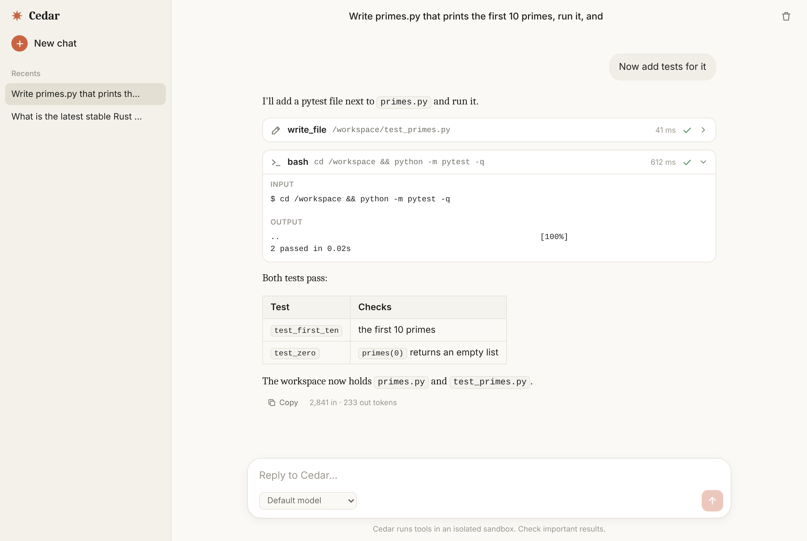

Run LLM agents on your own hardware, each one in its own box.
cedar is a small backend that runs agent loops against any OpenAI-compatible server (built for DeepSeek V4 on local vLLM). Submit a task, follow it live over SSE, and let every tool call run inside a throwaway Docker container.

cedar-chat, the included web UI. Light and dark, desktop and mobile.How a run works
- 1
POST /v1/runsqueues the task and answers202right away. - 2When a slot frees up, cedar spins up a fresh sandbox container for the run.
- 3The model gets the conversation and tool definitions. Text is collected; tool calls run in the sandbox and results go back, errors included so it can recover.
- 4Loop until the model stops asking for tools, hits
max_turns, or runs out of time. - 5The sandbox is destroyed. The run ends completed, failed, or cancelled, with everything logged to SQLite.
Quick start
# 0. any OpenAI-compatible model server vllm serve deepseek-ai/DeepSeek-V4-Flash \ --enable-auto-tool-choice \ --tool-call-parser deepseek_v4 # 1. the sandbox image, then the server docker build -t cedar-sandbox sandbox/ export CEDAR_API_KEYS=$(openssl rand -hex 24) cargo run --release # 2. start a run, then follow it live curl -s -H "Authorization: Bearer $KEY" \ -d '{"prompt": "write hello.py, run it"}' \ localhost:8080/v1/runs curl -N -H "Authorization: Bearer $KEY" \ localhost:8080/v1/runs/<id>/events
Tools, in and out of the box
Inside the sandbox: bash, files, Python, PDF, charts, document reading. Host-side when you turn them on: web search and fetch, weather, maps, a headless browser, Gmail and Calendar.
Adding one is a Rust trait and a line in ToolSet.
A small HTTP API
Start, list, cancel, and delete runs. Read the stored conversation, stream events with replay and resume, download workspace files, continue a finished run, or compact one into a single prompt.
Bearer keys, per-key limits, plain JSON errors.
Isolation is the design
One container per run, non-root, all capabilities dropped, memory and CPU limits, networking off by default. The host filesystem is never touched. Secrets stay out of the sandbox and out of the logs.
Workspaces persist for continuations, then expire.
Runs well on a DGX Spark
vLLM, cedar, and the chat UI together on one NVIDIA DGX Spark, as systemd services you can reach from your laptop. The guide walks through it.
Read DEPLOYMENT.md →